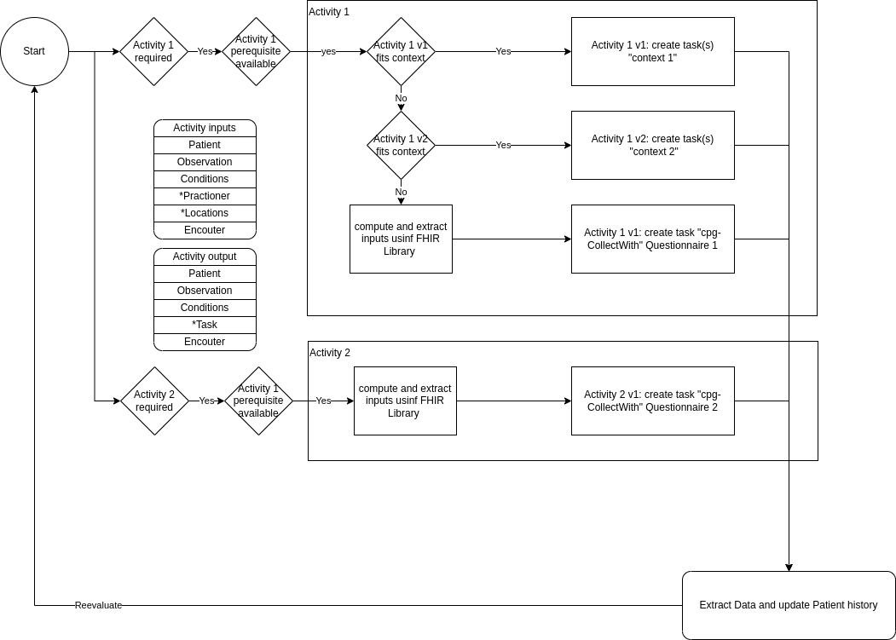

WHO Emergency Care Guideline Implementation Guide
0.1.0 - CI Build

WHO Emergency Care Guideline Implementation Guide
0.1.0 - CI Build

WHO Emergency Care Guideline Implementation Guide - Local Development build (v0.1.0). See the Directory of published versions
This implementation guide provides computable content based on the Digital Adaptation Kit (DAK) to facilitate the implementation of the Clinical Care in Crises guidelines. The following diagram illustrates the components of a Digital Adaptation Kit and how those components are represented in FHIR:

The general approach is to use the PlanDefiniton to start the relevant task/questionnaire based on the Patient and its history

/!\ this part with PlanDefinition is not yet in place because we didn’t succeded to generate CarePlan from PlanDefiniton with cpg-collectWith activityDefinition
The PlanDefinition will compute the task (implementation of an activity) required for a given patient when a EmCare encounter starts, it get updated at the end of each tasks
the picture above shows the posssiblity to replace the data collection proposed in that IG (FHIR questionnaire) by any other tasks given the task will create the required outputs expected later in the Encounter
Most, if not 100% of the logic depicted in the image above is located in CQL libraries
Each activity within an Encounter follows those steps:
Each activity may require those artefacts:
The key activities for Clinical Care in Crises (EmCare) are the following
| Code | Description | Applicability | predecessor |
|---|---|---|---|
| EmCareA.Registration.P | New Patient registration [NEED_INPUT] | Any | New Patient |
| EmCareA.Registration.E | New Encounter registration [NEED_INPUT] | Any | New Encounter |
| EmCare.B7.LTI-DangerSigns | Danger signs [NEED_INPUT] | >= 2 months | Registration |
| EmCare.B6.Measurements | Measurement [NEED_INPUT] | Any | Danger Signs |
| EmCare.B18-21.Symptoms.2m.m | [NEED_INPUT] | futurework | Measurements |
| EmCare.B10-14.Symptoms.2m.p | [NEED_INPUT] | >= 2 months | Measurements |
| EmCare.B18-21.Signs.2m.m | [NEED_INPUT] | < 2 months | Symptoms |
| EmCare.B10-16.Signs.2m.p | [NEED_INPUT] | >= 2 months | Symptoms |
| EmCare.B22.AssessmentsTests | [NEED_INPUT] | See details below | Any |
| EmCare.B23.Classification.2m.m | [NEED_INPUT] | < 2 months | Assessement-test |
| EmCare.B23.Classification.2m.p | [NEED_INPUT] | >= 2 months | >= 2 months |
| EmCare.Treatment | [NEED_INPUT] | Any | Any |
| Code | Description | Applicability |
|---|---|---|
| Breastfeeding | [NEED_INPUT] | AgeInMonths >=2 and AgeInMonths <6 and “severe classification up to assessments and tests excluding severe dehydration” !=true OR AgeInMonths <2 and “Breastfed” = true and “yi severe classification other than severe dehydration” !=true |
| Respiratory Rate | [NEED_INPUT] | (“Cough” = true or “Difficulty Breathing” = true or “AgeInMonths”<2) and “Fast Breathing” is null |
| Bronchodilator | [NEED_INPUT] | (“Cough” = true or “Difficulty Breathing” = true) and “Wheezing” = true and (“Fast Breathing” = true or “Chest Indrawing” = true) and “danger signs” != true and “Stridor in a calm child”= false and “Oxygen Saturation” >= 90 ‘%’ |
| Hemoglobin | [NEED_INPUT] | “Palmar pallor” = “Some palmar pallor” or “Palmar Pallor” = “Severe Palmar Pallor” or “Mucous membrane pallor” = “Some mucous membrane pallor” or “Mucous membrane pallor” = “Severe mucous membrane pallor” |
| Second Temperature | [NEED_INPUT] | “psbi other than temperature” != true and AgeInMonths()<2 and “Axillary Temperature (degrees Celcius)” > 38.5 ‘Cel’ |
| FluidTest | [NEED_INPUT] | (“Not able to drink or breastfeed” = true or “Vomiting Everything” = true or “Diarrhoea” = true) and o”Oral Fluid Test Results” is null |
Data elements are represented within this implementation guide using a codessystem of the appropriate resource as well as libraries of associated calculation logic for calculated, or inferred, data elements.
Note that some “Data elements” from the perspective of the Data Dictionary presented in the DAK are actually rollups. For example, Patient last name is a specific data element within the DAK, but is represented as one of many elements in the EmCare Patient profile.
The following diagram illustrates the processing used to derive FHIR terminology and profile resources from the data dictionary:
The inputs on the left consist of:
NOTE: The FHIR mappings are not part of the Digital Adaptation Kit, but are introduced as part of this implementation guide. The xls_form_iraq_v1.xlsx spreadsheet in the input/l2 folder is the source for these mappings, and was created by copying the WHO L2 spreadsheet from the Digital Adaptation Kit following the pyfhirsdc format, and then adding the FHIR mapping columns and providing the individual data element mappings.
The outputs on the right consist of:
Separating the Concepts CQL allows the domain-friendly name for each concept and answer set to be referenced by that name within the logic. This pattern also allows implementations to easily vary implementation by providing alternate versions of the Concepts library with their own definitions for the value sets, supporting local adaptation.
Separating the Patient and Encounter perspectives of the DataElements libraries allows the same data elements to be used from different contexts, depending on the use case. For example, when referenced from decision support logic, the Encounter perspective is typically used, whereas from indicator logic, the Patient perspective is typically used.
The model for data elements represented within this implementation guide is based on the following profiles. All the data elements defined derive from one of these profiles, and all data used within smart content and related decision support rules and health metrics use these profiles, or profiles that are derived from them:
| Profile |
|---|
| EmCare Condition |
| EmCare Observation |
| EmCare Patient |
The following index lists all data elements, grouped by their activity:
ouputs generated by the structureMaps
| type | code / path | valueType | Description |
|---|---|---|---|
| Patient | name | HumanName | set a ressource value |
| RelatedPerson | name | HumanName | set a ressource value |
| CommunicationRequest | EmCare.A.DE38 | N/A | set a communication request to the care giver |
ouputs generated by the structureMaps
| type | code / path | valueType | Description |
|---|---|---|---|
| Observation | EmCare.B3.DE05 | boolean | Is the child sick Today? |
required for the execution
| type | code / path | valueType | Description |
|---|---|---|---|
| Observation | EmCare.B22.DE14 | boolean/quantity | Unable to Perform Oral Fluid Test |
ouputs generated by the structureMaps
| type | code / path | valueType | Description |
|---|---|---|---|
| Observation | EmCare.B7.DE02 | boolean | Convulsing Now |
| Observation | EmCare.B7-B8-B9.DE01 | CodeableConcept | Continue to Assess Sick Child |
| Observation | EmCare.B7.DE03 | boolean | Convulsion(s) in this Illness |
| Observation | EmCare.B7.DE08b | boolean | Unconscious or Lethargic |
| Observation | EmCare.B7.DE08 | boolean | Unconscious |
| Observation | EmCare.B7.DE08a | boolean | Lethargic |
| Observation | EmCare.B7.DE09 | boolean | Not able to drink or breastfeed |
| Observation | EmCare.B7.DE10 | boolean | Vomiting Everything |
| Observation | EmCare.B22.DE08 | CodeableConcept | Oral Fluid Test Results |
| Observation | EmCare.B22.DE14 | boolean | Unable to Perform Oral Fluid Test |
| Observation | EmCare.B22.DE14a | boolean | Completely Unable to Drink or Vomits Immediately / Everything |
| Observation | EmCare.B22.DE15 | boolean | Has the Child had anything to drink today? |
| Observation | EmCare.B22.DE16 | CodeableConcept | How did the child last drink |
required for the execution
| type | code / path | valueType | Description | |—|—|—|—|
ouputs generated by the structureMaps
| type | code / path | valueType | Description |
|---|---|---|---|
| Observation | EmCare.B6.DE01 | Quantity | Axillary Temperature (degrees Celcius) |
| Observation | EmCare.B6.DE04 | boolean | Thermometer not available |
| Observation | EmCare.B6.DE05 | boolean | Hot to Touch |
| Observation | EmCare.B6.DE01A | CodeableConcept | Measured Temperature |
| Observation | EmCare.B6.DE06 | Quantity | Weight (Kg) |
| Observation | EmCare.B6.DE08 | Quantity | Estimated Weight |
| Observation | EmCare.B6.DE09 | Quantity | Height |
| Observation | EmCare.B6.DE11 | boolean | Height cannot be measured |
| Observation | EmCare.B6.DE12 | Quantity | Length |
| Observation | EmCare.B6.DE16 | boolean | Weight for Age (WFA) Z Scores |
| Observation | EmCare.B6.DE17 | Quantity | MUAC (mm) |
| Observation | EmCare.B6.DE17a | boolean | MUAC cannot be measured |
| Observation | EmCare.B6.DE18 | CodeableConcept | Visually assess for whether underweight (for drug dose calculation) |
required for the execution
| type | code / path | valueType | Description |
|---|---|---|---|
| Observation | EmCare.B7.DE02 | boolean/quantity | Convulsing Now |
ouputs generated by the structureMaps
| type | code / path | valueType | Description |
|---|---|---|---|
| Observation | EmCare.B7.DE03 | boolean | Convulsion(s) in this Illness |
| Observation | EmCare.B18S1.DE02 | CodeableConcept | Difficulty with Feeding |
| Observation | EmCare.B11S1.DE01 | boolean | Diarrhoea |
| Observation | EmCare.B21S1.DE06 | boolean | Breastfed |
required for the execution
| type | code / path | valueType | Description |
|---|---|---|---|
| Observation | EmCare.B11S1.DE01 | boolean/quantity | Diarrhoea |
| Observation | EmCare.B21S1.DE06 | boolean/quantity | Breastfed |
| Observation | EmCare.B18S1.DE02 | boolean/quantity | Difficulty with Feeding |
| Observation | EmCare.B7.DE03 | boolean/quantity | Convulsion(s) in this Illness |
| Observation | EmCare.B22.DE01 | boolean/quantity | Respiratory Rate (breaths per minute) |
| Observation | EmCare.B22.DE04 | boolean/quantity | Respiratory Rate Second Count (breaths per minute) |
| Observation | EmCare.B22.DE07 | boolean/quantity | Fast Breathing |
ouputs generated by the structureMaps
| type | code / path | valueType | Description |
|---|---|---|---|
| Observation | EmCare.B18S2.DE07 | boolean | Severe Chest Indrawing |
| Observation | EmCare.B18S2.DE08 | CodeableConcept | Movements |
| Observation | EmCare.B18S2.DE12 | boolean | Umbilicus Red or Pus Draining |
| Observation | EmCare.B18S2.DE13 | boolean | Skin Pustules |
| Observation | EmCare.B19S2.DE01 | boolean | Yellow Skin |
| Observation | EmCare.B19S2.DE02 | boolean | Yellow Palms or Yellow Soles |
| Observation | EmCare.B19S2.DE04 | CodeableConcept | When did the Jaundice first appear? |
| Observation | EmCare.B11S2.DE01 | boolean | Sunken Eyes |
| Observation | EmCare.B11S2.DE02 | CodeableConcept | Skin pinch of Abdomen |
| Observation | EmCare.B11S2.DE06 | boolean | Restless and Irritable |
| Observation | EmCare.B21S2.DE01 | CodeableConcept | Weight Status |
| Observation | EmCare.B21S2.DE05 | Quantity | Breastfed how many times in 24 hours? |
| Observation | EmCare.B21S2.DE06 | Quantity | Sufficient feeds |
| Observation | EmCare.B21S2.DE08 | boolean | Young Infant receives food or fluids other than breast milk |
| Observation | EmCare.B21S2.DE09&EmCare.B21S2.DE11 | boolean | What milk is being given as a replacement feed?:Inappropriate replacement milk |
| Observation | EmCare.B21S2.DE09&EmCare.B21S2.DE10 | boolean | What milk is being given as a replacement feed?:Appropriate replacement milk |
| Observation | EmCare.B21S2.DE12 | Quantity | How many replacement feeds during the day and night (24 hours)? |
| Observation | EmCare.B21S2.DE13 | boolean | Sufficient replacement feeds (in 24 hours) |
| Observation | EmCare.B21S2.DE15 | Quantity | How much milk is given at each feed (ml)? |
| Observation | EmCare.B21S2.DE16 | boolean | Sufficient replacement feeds |
| Observation | EmCare.B21S2.DE18 | CodeableConcept | How is the milk prepared? |
| Observation | EmCare.B21S2.DE21 | CodeableConcept | How is the milk given? |
| Observation | EmCare.B21S2.DE24 | CodeableConcept | How are the feeding utensils cleaned? |
| Observation | EmCare.B21S2.DE27 | CodeableConcept | Do you give any breastmilk at all? |
| Observation | EmCare.B21S2.DE30 | boolean | Ulcers or White Patches in Mouth |
| Observation | EmCare.B21S2.DE31 | boolean | Unable to check if Ulcers or White Patches in Mouth |
| Observation | EmCare.B22.DE01 | Quantity | Respiratory Rate (breaths per minute) |
| Observation | EmCare.B22.DE02 | boolean | Unable to perform Respiratory Rate at this time |
| Observation | EmCare.B22.DE04 | Quantity | Respiratory Rate Second Count (breaths per minute) |
| Observation | EmCare.B22.DE05 | boolean | Respiratory Rate Second Count Not Possible |
| Observation | EmCare.B22.DE07 | boolean | Fast Breathing |
required for the execution
| type | code / path | valueType | Description | |—|—|—|—|
ouputs generated by the structureMaps
| type | code / path | valueType | Description |
|---|---|---|---|
| Observation | EmCare.B10S1.DE05 | boolean | Cough |
| Observation | EmCare.B10S1.DE06 | CodeableConcept | Cough for how long? |
| Observation | EmCare.B10S1.DE01 | boolean | Difficulty Breathing |
| Observation | EmCare.B10S1.DE02 | CodeableConcept | Difficulty breathing for how long? |
| Observation | EmCare.B11S1.DE01 | boolean | Diarrhoea |
| Observation | EmCare.B11S1.DE02 | CodeableConcept | Diarrhoea for how long? |
| Observation | EmCare.B11S1.DE05 | boolean | Blood in the stool in this Illness |
| Observation | EmCare.B12S1.DE02 | boolean | Fever Reported |
| Observation | EmCare.B12S1.DE03 | CodeableConcept | Fever for how long? |
| Observation | EmCare.B.G.DE06 | boolean | Fever |
| Observation | EmCare.B12S1.DE06 | boolean | Has Fever been present every day since the Fever started? |
| Observation | EmCare.B13S1.DE01 | boolean | Ear problem |
| Observation | EmCare.B13S1.DE02 | boolean | Ear pain |
| Observation | EmCare.B13S1.DE03 | boolean | Ear discharge |
| Observation | EmCare.B13S1.DE04 | CodeableConcept | Ear discharge for how long? |
| Observation | EmCare.B14S1.DE03 | boolean | Eye Problem |
| Observation | EmCare.B14S1.DE01 | boolean | Skin Problem |
| Observation | EmCare.B14S1.DE02 | boolean | Itchy Skin |
required for the execution
| type | code / path | valueType | Description |
|---|---|---|---|
| Observation | EmCare.B10S1.DE05 | boolean/quantity | Cough |
| Observation | EmCare.B10S1.DE01 | boolean/quantity | Difficulty Breathing |
| Observation | EmCare.B22.DE14 | boolean/quantity | Unable to Perform Oral Fluid Test |
| Observation | EmCare.B22.DE08&EmCare.B22.DE14a | boolean/quantity | Oral Fluid Test Results:Completely Unable to Drink or Vomits Immediately / Everything |
| Observation | EmCare.B11S1.DE01 | boolean/quantity | Diarrhoea |
| Observation | EmCare.B7.DE09 | boolean/quantity | Not able to drink or breastfeed |
| Observation | EmCare.B13S1.DE01 | boolean/quantity | Ear Problem |
| Observation | EmCare.B14S1.DE03 | boolean/quantity | Eye Problem |
| Observation | EmCare.B14S1.DE01 | boolean/quantity | Skin Problem |
| Observation | EmCare.B13S1.DE03 | boolean/quantity | Ear discharge |
| Observation | EmCare.B13S1.DE04 | boolean/quantity | Ear discharge for how long? |
| Observation | EmCare.B14S1.DE02 | boolean/quantity | Itchy Skin |
| Observation | EmCare.B22.DE01 | boolean/quantity | Respiratory Rate (breaths per minute) |
| Observation | EmCare.B22.DE04 | boolean/quantity | Respiratory Rate Second Count (breaths per minute) |
| Observation | EmCare.B22.DE07 | boolean/quantity | Fast Breathing |
ouputs generated by the structureMaps
| type | code / path | valueType | Description |
|---|---|---|---|
| Observation | EmCare.B10S2.DE03 | boolean | Chest Indrawing |
| Observation | EmCare.B10S2.DE04 | boolean | Stridor in a calm child |
| Observation | EmCare.B10S2.DE05 | boolean | Wheezing |
| Observation | EmCare.B10S2.DE06 | boolean | Recurrent Wheeze |
| Observation | EmCare.B10S2.DE07 | Quantity | Oxygen Saturation |
| Observation | EmCare.B11S2.DE01 | boolean | Sunken eyes |
| Observation | EmCare.B11S2.DE02 | CodeableConcept | Skin pinch of Abdomen |
| Observation | EmCare.B11S2.DE06 | boolean | Restless and Irritable |
| Observation | EmCare.B17S1.DE01 | boolean | Throat problem |
| Observation | EmCare.B17S1.DE02 | CodeableConcept | Specify Throat problem |
| Observation | EmCare.B17S1.DE06 | boolean | Enlarged lymph nodes on front of neck |
| Observation | EmCare.B17S1.DE07 | CodeableConcept | Ability to swallow |
| Observation | EmCare.B13S2.DE01 | boolean | Tender swelling behind the ear |
| Observation | EmCare.B13S2.DE02 | boolean | Pus Seen Draining from the Ear |
| Observation | EmCare.B13S2.DE03 | CodeableConcept | Pus Seen Draining from the Ear for how long? |
| Observation | EmCare.B12S2.DE01 | boolean | Stiff neck |
| Observation | EmCare.B12S2.DE05 | boolean | Runny nose |
| Observation | EmCare.B14S2.DE01 | boolean | Red eyes |
| Observation | EmCare.B14S2.DE02 | boolean | Pus Draining from Eye |
| Observation | EmCare.B14S2.DE03 | boolean | Clouding of the Cornea |
| Observation | EmCare.B14S2.DE04 | boolean | Is Clouding of the Cornea a new problem |
| Observation | EmCare.B14S2.DE05 | boolean | Has Clouding of the Cornea previously been treated |
| Observation | EmCare.B14S2.DE06&EmCare.B14S2.DE07 | boolean | Generalised or Localised Skin Problem:Generalised Skin Problem |
| Observation | EmCare.B14S2.DE06&EmCare.B14S2.DE08 | boolean | Generalised or Localised Skin Problem:Localised Skin Problem |
| Observation | EmCare.B14S2.DE06&EmCare.B14S2.DE09 | boolean | Generalised or Localised Skin Problem:No Problem |
| Observation | EmCare.B14S2.DE10 | boolean | Measles Rash |
| Observation | EmCare.B14S2.DE11 | boolean | Measles within the last 3 months |
| Observation | EmCare.B14S2.DE12 | boolean | Blisters, Sores or Pustules |
| Observation | EmCare.B14S2.DE13&EmCare.B14S2.DE18 | boolean | Type of Skin Problem:Papular Urticaria or Papular Pruritic Eruptions |
| Observation | EmCare.B14S2.DE13&EmCare.B14S2.DE19 | boolean | Type of Skin Problem:Ringworm (Tinea) |
| Observation | EmCare.B14S2.DE13&EmCare.B14S2.DE21 | boolean | Type of Skin Problem:Scabies |
| Observation | EmCare.B14S2.DE13&EmCare.B14S2.DE22 | boolean | Type of Skin Problem:Chickenpox |
| Observation | EmCare.B14S2.DE13&EmCare.B14S2.DE23 | boolean | Type of Skin Problem:Herpes Zoster |
| Observation | EmCare.B14S2.DE13&EmCare.B14S2.DE25 | boolean | Type of Skin Problem:Impetigo |
| Observation | EmCare.B14S2.DE13&EmCare.B14S2.DE31 | boolean | Type of Skin Problem:Molluscum Contagiosum |
| Observation | EmCare.B14S2.DE13&EmCare.B14S2.DE32 | boolean | Type of Skin Problem:Warts |
| Observation | EmCare.B14S2.DE13&EmCare.B14S2.DE33 | boolean | Type of Skin Problem:Seborrhoeic Dermatitis |
| Observation | EmCare.B14S2.DE13&EmCare.B14S2.DE35 | boolean | Type of Skin Problem:Fixed Drug Reaction |
| Observation | EmCare.B14S2.DE13&EmCare.B14S2.DE36 | boolean | Type of Skin Problem:Eczema |
| Observation | EmCare.B14S2.DE13&EmCare.B14S2.DE37 | boolean | Type of Skin Problem:Steven Johnson Syndrome (SJS) |
| Observation | EmCare.B14S2.DE19a | boolean | Scalp Infection (tinea capitis) |
| Observation | EmCare.B14S2.DE22A | boolean | Severe rash |
| Observation | EmCare.B14S2.DE23a | boolean | Disseminated Herpes Zoster |
| Observation | EmCare.B14S2.DE24 | boolean | Eye Involvement |
| Observation | EmCare.B14S2.DE30 | boolean | Skin Infection extends to Muscle |
| Observation | EmCare.B14S2.DE30b | boolean | Extensive impetigo lesions |
| Observation | EmCare.B14S2.DE31a | boolean | Extensive molluscum lesions |
| Observation | EmCare.B14S2.DE31b | boolean | Molluscum lesions close to the eye |
| Observation | EmCare.B14S2.DE32a | boolean | Extensive warts |
| Observation | EmCare.B14S2.DE34 | boolean | Severe Seborrhoeic Dermatitis |
| Observation | EmCare.B14S2.DE36a | boolean | Secondary bacterial infection of eczema |
| Observation | EmCare.B14S2.DE36b | boolean | Severe acute moist or weeping eczema |
| Observation | EmCare.B14S2.DE36c | boolean | Secondary herpes infection of eczema (eczema herpeticum) |
| Observation | EmCare.B14S2.DE38 | CodeableConcept | Oral sores or Mouth Ulcers |
| Observation | EmCare.B14S2.DE43&EmCare.B14S2.DE44 | boolean | Add a Skin or Mouth or Eye Problem:Skin Problem |
| Observation | EmCare.B14S2.DE43&EmCare.B14S2.DE45 | boolean | Add a Skin or Mouth or Eye Problem:Oral Sores or Mouth Ulcers |
| Observation | EmCare.B14S2.DE43&EmCare.B14S2.DE46 | boolean | Add a Skin or Mouth or Eye Problem:Eye Problem |
| Observation | EmCare.B14S2.DE43&EmCare.B14S2.DE47 | boolean | Add a Skin or Mouth or Eye Problem:No - Do not add a Skin or Mouth or Eye Problem |
| Observation | EmCare.B15S2.DE01 | CodeableConcept | Palmar Pallor |
| Observation | EmCare.B15S2.DE09 | CodeableConcept | Mucous membrane pallor |
| Observation | EmCare.B22.DE01 | Quantity | Respiratory Rate (breaths per minute) |
| Observation | EmCare.B22.DE02 | boolean | Unable to perform Respiratory Rate at this time |
| Observation | EmCare.B22.DE04 | Quantity | Respiratory Rate Second Count (breaths per minute) |
| Observation | EmCare.B22.DE05 | boolean | Respiratory Rate Second Count Not Possible |
| Observation | EmCare.B22.DE07 | boolean | Fast Breathing |
required for the execution
| type | code / path | valueType | Description |
|---|---|---|---|
| Observation | EmCare.B10S1.DE05 | boolean/quantity | Cough |
| Observation | EmCare.B10S1.DE01 | boolean/quantity | Difficulty Breathing |
| Observation | EmCare.B22.DE07 | boolean/quantity | Fast Breathing |
| Observation | EmCare.B10S2.DE05 | boolean/quantity | Wheezing |
| Observation | EmCare.B10S2.DE03 | boolean/quantity | Chest Indrawing |
| Observation | EmCare.B10S2.DE04 | boolean/quantity | Stridor in a calm child |
| Observation | EmCare.B10S2.DE07 | boolean/quantity | Oxygen Saturation |
| Observation | EmCare.B15S2.DE01 | CodeableConcept | Palmar Pallor |
| Observation | EmCare.B15S2.DE09 | CodeableConcept | Mucous membrane pallor |
| Observation | EmCare.B6.DE01 | boolean/quantity | Axillary Temperature (degrees Celcius) |
| Observation | EmCare.B11S1.DE01 | boolean/quantity | Diarrhoea |
| Observation | EmCare.B22.DE08 | boolean/quantity | Oral Fluid Test Results |
| Observation | EmCare.B22.DE01 | boolean/quantity | Respiratory Rate (breaths per minute) |
| Observation | EmCare.B22.DE04 | boolean/quantity | Respiratory Rate Second Count (breaths per minute) |
| Observation | EmCare.B22.DE14 | boolean/quantity | Unable to Perform Oral Fluid Test |
| Observation | EmCare.B7.DE09 | boolean/quantity | Not able to drink or breastfeed |
| Observation | EmCare.B7.DE10 | boolean/quantity | Vomiting Everything |
ouputs generated by the structureMaps
| type | code / path | valueType | Description |
|---|---|---|---|
| Observation | EmCare.B22.DE01 | Quantity | Respiratory Rate (breaths per minute) |
| Observation | EmCare.B22.DE02 | boolean | Unable to perform Respiratory Rate at this time |
| Observation | EmCare.B22.DE04 | Quantity | Respiratory Rate Second Count (breaths per minute) |
| Observation | EmCare.B22.DE05 | boolean | Respiratory Rate Second Count Not Possible |
| Observation | EmCare.B22.DE07 | boolean | Fast Breathing |
| Observation | EmCare.B22.DE08 | CodeableConcept | Oral Fluid Test Results |
| Observation | EmCare.B22.DE14 | boolean | Unable to Perform Oral Fluid Test |
| Observation | EmCare.B22.DE14a | boolean | Completely Unable to Drink or Vomits Immediately / Everything |
| Observation | EmCare.B22.DE15 | boolean | Has the Child had anything to drink today? |
| Observation | EmCare.B22.DE16 | CodeableConcept | How did the child last drink |
| Observation | EmCare.B22.DE17&EmCare.B22.DE18 | boolean | Inhaled Bronchodilator Trial Results:Chest Indrawing (post inhaled bronchodilator trial) |
| Observation | EmCare.B22.DE17&EmCare.B22.DE19 | boolean | Inhaled Bronchodilator Trial Results:Respiratory Rate (post inhaled bronchodilator trial) |
| Observation | EmCare.B22.DE17&EmCare.B22.DE20 | boolean | Inhaled Bronchodilator Trial Results:Fast Breathing (post inhaled bronchodilator trial) |
| Observation | EmCare.B22.DE17&EmCare.B22.DE21 | boolean | Inhaled Bronchodilator Trial Results:No Fast Breathing and No Chest Indrawing (post Inhaled Bronchodilator Trial) |
| Observation | EmCare.B22.DE17&EmCare.B22.DE22 | boolean | Inhaled Bronchodilator Trial Results:Inhaled Bronchodilator Trial Not Feasible or Available |
| Observation | EmCare.B22.DE22 | boolean | Inhaled Bronchodilator Trial Not Feasible or Available |
| Observation | EmCare.B22.DE21 | boolean | No Fast Breathing and No Chest Indrawing (post Inhaled Bronchodilator Trial) |
| Observation | EmCare.B22.DE41 | boolean | Breastfeeding Assessment Not Possible |
| Observation | EmCare.B22.DE28 | boolean | Breastfed in the previous hour |
| Observation | EmCare.B22.DE29 | boolean | Mother able to wait until young infant is willing to breastfeed again |
| Observation | EmCare.B22.DE30 | boolean | Mother reports difficulty breastfeeding |
| Observation | EmCare.B22.DE31 | boolean | Chin Touching Breast |
| Observation | EmCare.B22.DE32 | boolean | Mouth Wide Open |
| Observation | EmCare.B22.DE33 | boolean | Lower Lip Turned Outwards |
| Observation | EmCare.B22.DE34 | boolean | More Areola Visible above than below the Mouth |
| Observation | EmCare.B22.DE35 | boolean | Slow Deep Sucks, Sometimes Pausing |
| Observation | EmCare.B22.DE36 | CodeableConcept | Breastfeeding Assessment Results |
| Observation | EmCare.B22.DE42 | boolean | Difficulty Breastfeeding Reported |
| Observation | EmCare.B22.DE44 | boolean | Difficulty Breastfeeding Observed |
| Observation | EmCare.B22.DE81 | Quantity | Hemoglobin (Hb) g/dL |
| Observation | EmCare.B22.DE82 | boolean | Hemoglobin Test Not Available |
| Observation | EmCare.B22.DE47 | Quantity | Axillary Temperature (second measurement) |
| Observation | EmCare.B22.DE46 | boolean | Second Temperature Measurement Not Feasible |
| Observation | EmCare.B22.DE50 | CodeableConcept | Measured Temperature (second measurement) |
required for the execution
| type | code / path | valueType | Description |
|---|---|---|---|
| Observation | EmCare.B22.DE14 | boolean/quantity | Unable to Perform Oral Fluid Test |
| Observation | EmCare.B7.DE09 | boolean/quantity | Not able to drink or breastfeed |
| Observation | EmCare.B7.DE10 | boolean/quantity | Vomiting Everything |
ouputs generated by the structureMaps
| type | code / path | valueType | Description |
|---|---|---|---|
| Observation | EmCare.B22.DE08 | CodeableConcept | Oral Fluid Test Results |
| Observation | EmCare.B22.DE14 | boolean | Unable to Perform Oral Fluid Test |
| Observation | EmCare.B22.DE14a | boolean | Completely Unable to Drink or Vomits Immediately / Everything |
| Observation | EmCare.B22.DE15 | boolean | Has the Child had anything to drink today? |
| Observation | EmCare.B22.DE16 | CodeableConcept | How did the child last drink |
required for the execution
| type | code / path | valueType | Description |
|---|---|---|---|
| Observation | EmCare.B22.DE01 | boolean/quantity | Respiratory Rate (breaths per minute) |
| Observation | EmCare.B22.DE04 | boolean/quantity | Respiratory Rate Second Count (breaths per minute) |
| Observation | EmCare.B22.DE07 | boolean/quantity | Fast Breathing |
ouputs generated by the structureMaps
| type | code / path | valueType | Description |
|---|---|---|---|
| Observation | EmCare.B22.DE01 | Quantity | Respiratory Rate (breaths per minute) |
| Observation | EmCare.B22.DE02 | boolean | Unable to perform Respiratory Rate at this time |
| Observation | EmCare.B22.DE04 | Quantity | Respiratory Rate Second Count (breaths per minute) |
| Observation | EmCare.B22.DE05 | boolean | Respiratory Rate Second Count Not Possible |
| Observation | EmCare.B22.DE07 | boolean | Fast Breathing |
ouputs generated by the structureMaps
| type | code / path | valueType | Description |
|---|---|---|---|
| Observation | EmCare.B22.DE17&EmCare.B22.DE18 | boolean | Inhaled Bronchodilator Trial Results:Chest Indrawing (post inhaled bronchodilator trial) |
| Observation | EmCare.B22.DE17&EmCare.B22.DE19 | boolean | Inhaled Bronchodilator Trial Results:Respiratory Rate (post inhaled bronchodilator trial) |
| Observation | EmCare.B22.DE17&EmCare.B22.DE20 | boolean | Inhaled Bronchodilator Trial Results:Fast Breathing (post inhaled bronchodilator trial) |
| Observation | EmCare.B22.DE17&EmCare.B22.DE21 | boolean | Inhaled Bronchodilator Trial Results:No Fast Breathing and No Chest Indrawing (post Inhaled Bronchodilator Trial) |
| Observation | EmCare.B22.DE17&EmCare.B22.DE22 | boolean | Inhaled Bronchodilator Trial Results:Inhaled Bronchodilator Trial Not Feasible or Available |
| Observation | EmCare.B22.DE22 | boolean | Inhaled Bronchodilator Trial Not Feasible or Available |
| Observation | EmCare.B22.DE21 | boolean | No Fast Breathing and No Chest Indrawing (post Inhaled Bronchodilator Trial) |
required for the execution
| type | code / path | valueType | Description | |—|—|—|—|
ouputs generated by the structureMaps
| type | code / path | valueType | Description |
|---|---|---|---|
| Observation | EmCare.B22.DE41 | boolean | Breastfeeding Assessment Not Possible |
| Observation | EmCare.B22.DE28 | boolean | Breastfed in the previous hour |
| Observation | EmCare.B22.DE29 | boolean | Mother able to wait until young infant is willing to breastfeed again |
| Observation | EmCare.B22.DE30 | boolean | Mother reports difficulty breastfeeding |
| Observation | EmCare.B22.DE31 | boolean | Chin Touching Breast |
| Observation | EmCare.B22.DE32 | boolean | Mouth Wide Open |
| Observation | EmCare.B22.DE33 | boolean | Lower Lip Turned Outwards |
| Observation | EmCare.B22.DE34 | boolean | More Areola Visible above than below the Mouth |
| Observation | EmCare.B22.DE35 | boolean | Slow Deep Sucks, Sometimes Pausing |
| Observation | EmCare.B22.DE36 | CodeableConcept | Breastfeeding Assessment Results |
| Observation | EmCare.B22.DE42 | boolean | Difficulty Breastfeeding Reported |
| Observation | EmCare.B22.DE44 | boolean | Difficulty Breastfeeding Observed |
ouputs generated by the structureMaps
| type | code / path | valueType | Description |
|---|---|---|---|
| Observation | EmCare.B22.DE81 | Quantity | Hemoglobin (Hb) g/dL |
| Observation | EmCare.B22.DE82 | boolean | Hemoglobin Test Not Available |
required for the execution
| type | code / path | valueType | Description | |—|—|—|—|
ouputs generated by the structureMaps
| type | code / path | valueType | Description |
|---|---|---|---|
| Observation | EmCare.B22.DE47 | Quantity | Axillary Temperature (second measurement) |
| Observation | EmCare.B22.DE46 | boolean | Second Temperature Measurement Not Feasible |
| Observation | EmCare.B22.DE50 | CodeableConcept | Measured Temperature (second measurement) |
required for the execution
| type | code / path | valueType | Description |
|---|---|---|---|
| Observation | EmCare.B22.DE50 | boolean/quantity | Measured Temperature (second measurement) |
| Observation | EmCare.B22.DE07 | boolean/quantity | Fast Breathing |
| Observation | EmCare.B18S2.DE12 | boolean/quantity | Umbilicus Red or Pus Draining |
| Observation | EmCare.B18S2.DE13 | boolean/quantity | Skin Pustules |
| Observation | EmCare.B21S2.DE01 | CodeableConcept | Weight Status |
| Observation | EmCare.B19S2.DE01 | boolean/quantity | Yellow Skin |
| Observation | EmCare.B19S2.DE02 | boolean/quantity | Yellow Palms or Yellow Soles |
| Observation | EmCare.B11S1.DE01 | boolean/quantity | Diarrhoea |
| Observation | EmCare.B21S2.DE30 | boolean/quantity | Ulcers or White Patches in Mouth |
ouputs generated by the structureMaps
| type | code / path | valueType | Description |
|---|---|---|---|
| Condition | EmCare.B23.DE83 | boolean | generate a condition |
| Condition | EmCare.B23.DE06 | boolean | generate a condition |
| Condition | EmCare.B23.DE85 | boolean | generate a condition |
| Condition | EmCare.B23.DE86 | boolean | generate a condition |
| Condition | EmCare.B23.DE106 | boolean | generate a condition |
| Condition | EmCare.B23.DE87 | boolean | generate a condition |
| Condition | EmCare.B23.DE88 | boolean | generate a condition |
| Condition | EmCare.B23.DE89 | boolean | generate a condition |
| Condition | EmCare.B23.DE13 | boolean | generate a condition |
| Condition | EmCare.B23.DE14 | boolean | generate a condition |
| Condition | EmCare.B23.DE15 | boolean | generate a condition |
| Condition | EmCare.B23.DE94 | boolean | generate a condition |
| Condition | EmCare.B23.DE98 | boolean | generate a condition |
required for the execution
| type | code / path | valueType | Description |
|---|---|---|---|
| Observation | EmCare.B6.DE06 | boolean/quantity | Weight (Kg) |
| Observation | EmCare.B10S1.DE05 | boolean/quantity | Cough |
| Observation | EmCare.B10S1.DE01 | boolean/quantity | Difficulty Breathing |
| Observation | EmCare.B10S2.DE04 | boolean/quantity | Stridor in a calm child |
| Observation | EmCare.B10S2.DE07 | boolean/quantity | Oxygen Saturation |
| Observation | EmCare.B10S2.DE05 | boolean/quantity | Wheezing |
| Observation | EmCare.B10S1.DE06 | CodeableConcept | Cough for how long? |
| Observation | EmCare.B10S1.DE02 | CodeableConcept | Difficulty breathing for how long? |
| Observation | EmCare.B10S2.DE06 | boolean/quantity | Recurrent Wheeze |
| Observation | EmCare.B14S2.DE11 | boolean/quantity | Measles within the last 3 months |
| Observation | EmCare.B22.DE07 | boolean/quantity | Fast breathing |
| Observation | EmCare.B10S2.DE03 | boolean/quantity | Chest indrawing |
| Observation | EmCare.B11S1.DE01 | boolean/quantity | Diarrhoea |
| Observation | EmCare.B11S1.DE02 | CodeableConcept | Diarrhoea for how long? |
| Observation | EmCare.B11S1.DE05 | boolean/quantity | Blood in the stool in this Illness |
| Observation | EmCare.B6.DE01 | boolean/quantity | Axillary Temperature (degrees Celcius) |
| Observation | EmCare.B17S1.DE01 | boolean/quantity | Throat problem |
| Observation | EmCare.B7.DE09 | boolean/quantity | Not able to drink or breastfeed |
| Observation | EmCare.B17S1.DE07 | CodeableConcept | Ability to swallow |
| Observation | EmCare.B17S1.DE02 | CodeableConcept | Specify Throat problem |
| Observation | EmCare.B17S1.DE06 | boolean/quantity | Enlarged lymph nodes on front of neck |
| Observation | EmCare.B13S1.DE01 | boolean/quantity | Ear Problem |
| Observation | EmCare.B13S2.DE01 | boolean/quantity | Tender swelling behind the ear |
| Observation | EmCare.B13S2.DE02 | boolean/quantity | Pus Seen Draining from the Ear |
| Observation | EmCare.B13S1.DE02 | boolean/quantity | Ear Pain |
| Observation | EmCare.B12S2.DE01 | boolean/quantity | Stiff Neck |
| Observation | EmCare.B12S1.DE03 | CodeableConcept | Fever for how long? |
| Observation | EmCare.B12S1.DE06 | boolean/quantity | Has Fever been present every day since the Fever started? |
| Observation | EmCare.B14S2.DE02 | boolean/quantity | Pus Draining from Eye |
| Observation | EmCare.B14S2.DE38 | CodeableConcept | Oral Sores or Mouth Ulcers |
| Observation | EmCare.B12S2.DE05 | boolean/quantity | Runny nose |
| Observation | EmCare.B14S2.DE01 | boolean/quantity | Red eyes |
| Observation | EmCare.B14S2.DE10 | boolean/quantity | Measles Rash |
| Observation | EmCare.B14S2.DE06&EmCare.B14S2.DE07 | boolean/quantity | Generalised or Localised Skin Problem |
| Observation | EmCare.B15S2.DE01 | CodeableConcept | Palmar Pallor |
| Observation | EmCare.B15S2.DE09 | CodeableConcept | Mucous membrane pallor |
| Observation | EmCare.B22.DE81 | boolean/quantity | Hemoglobin (Hb) g/dL |
| Observation | EmCare.B22.DE82 | boolean/quantity | Hemoglobin Test Not Available |
| Observation | EmCare.B14S1.DE03 | boolean/quantity | Eye Problem |
| Observation | EmCare.B14S2.DE03 | boolean/quantity | Clouding of the Cornea |
| Observation | EmCare.B14S1.DE01 | boolean/quantity | Skin Problem |
| Observation | EmCare.B14S1.DE02 | boolean/quantity | Itchy Skin |
| Observation | EmCare.B14S2.DE13&EmCare.B14S2.DE18 | boolean/quantity | Type of Skin Problem |
| Observation | EmCare.B14S2.DE13&EmCare.B14S2.DE19 | boolean/quantity | Type of Skin Problem |
| Observation | EmCare.B14S2.DE19a | boolean/quantity | Scalp Infection (tinea capitis) |
| Observation | EmCare.B14S2.DE13&EmCare.B14S2.DE21 | boolean/quantity | Type of Skin Problem |
| Observation | EmCare.B14S2.DE12 | boolean/quantity | Blisters, Sores or Pustules |
| Observation | EmCare.B14S2.DE13&EmCare.B14S2.DE22 | boolean/quantity | Type of Skin Problem |
| Observation | EmCare.B14S2.DE22A | boolean/quantity | Severe rash |
| Observation | EmCare.B14S2.DE06&EmCare.B14S2.DE08 | boolean/quantity | Generalised or Localised Skin Problem |
| Observation | EmCare.B14S2.DE13&EmCare.B14S2.DE23 | boolean/quantity | Type of Skin Problem |
| Observation | EmCare.B14S2.DE24 | boolean/quantity | Eye Involvement |
| Observation | EmCare.B14S2.DE23a | boolean/quantity | Disseminated Herpes Zoster |
| Observation | EmCare.B14S2.DE13&EmCare.B14S2.DE25 | boolean/quantity | Type of Skin Problem |
| Observation | EmCare.B14S2.DE30 | boolean/quantity | Skin infection extends to muscle |
| Observation | EmCare.B6.DE01A | boolean/quantity | Measured Temperature |
| Observation | EmCare.B14S2.DE30b | boolean/quantity | Extensive impetigo lesions |
| Observation | EmCare.B14S2.DE13&EmCare.B14S2.DE31 | boolean/quantity | Type of Skin Problem |
| Observation | EmCare.B14S2.DE31a | boolean/quantity | Extensive molluscum lesions |
| Observation | EmCare.B14S2.DE31b | boolean/quantity | Molluscum lesions close to the eye |
| Observation | EmCare.B14S2.DE13&EmCare.B14S2.DE32 | boolean/quantity | Type of Skin Problem |
| Observation | EmCare.B14S2.DE32a | boolean/quantity | Extensive Warts |
| Observation | EmCare.B14S2.DE13&EmCare.B14S2.DE33 | boolean/quantity | Type of Skin Problem |
| Observation | EmCare.B14S2.DE34 | boolean/quantity | Severe Seborrhoeic Dermatitis |
| Observation | EmCare.B14S2.DE13&EmCare.B14S2.DE35 | boolean/quantity | Type of Skin Problem |
| Observation | EmCare.B14S2.DE13&EmCare.B14S2.DE36 | boolean/quantity | Type of Skin Problem |
| Observation | EmCare.B14S2.DE36b | boolean/quantity | Severe acute moist or weeping eczema |
| Observation | EmCare.B14S2.DE36a | boolean/quantity | Secondary bacterial infection of eczema |
| Observation | EmCare.B14S2.DE36c | boolean/quantity | Secondary herpes infection of eczema (eczema herpeticum) |
| Observation | EmCare.B14S2.DE13&EmCare.B14S2.DE37 | boolean/quantity | Type of Skin Problem |
| Observation | EmCare.B6.DE17 | boolean/quantity | MUAC (mm) |
| Observation | EmCare.B6.DE17a | boolean/quantity | MUAC cannot be measured |
ouputs generated by the structureMaps
| type | code / path | valueType | Description |
|---|---|---|---|
| Observation | EmCare.B6.DE08 | Quantity | Estimated Weight |
| Condition | EmCare.B23.DE01 | boolean | generate a condition |
| Condition | EmCare.B23.DE03 | boolean | generate a condition with possible postcoordition |
| Condition | EmCare.B23.DE06 | boolean | generate a condition with possible postcoordition |
| Condition | EmCare.B23.DE10 | boolean | generate a condition with possible postcoordition |
| Condition | EmCare.B23.DE13 | boolean | generate a condition |
| Condition | EmCare.B23.DE14 | boolean | generate a condition |
| Condition | EmCare.B23.DE15 | boolean | generate a condition |
| Condition | EmCare.B23.DE16 | boolean | generate a condition |
| Condition | EmCare.B23.DE17 | boolean | generate a condition |
| Condition | EmCare.B23.DE18 | boolean | generate a condition |
| Condition | EmCare.B23.DE18.a | boolean | generate a condition |
| Condition | EmCare.B23.DE100 | boolean | generate a condition |
| Condition | EmCare.B23.DE6101 | boolean | generate a condition |
| Condition | EmCare.B23.DE6102 | boolean | generate a condition |
| Condition | EmCare.B23.DE6103 | boolean | generate a condition |
| Condition | EmCare.B23.DE30 | boolean | generate a condition |
| Condition | EmCare.B23.DE31 | boolean | generate a condition |
| Condition | EmCare.B23.DE32 | boolean | generate a condition with possible postcoordition |
| Condition | EmCare.B23.DE33 | boolean | generate a condition |
| Condition | EmCare.B23.DE19 | boolean | generate a condition |
| Condition | EmCare.B23.DE104 | boolean | generate a condition with possible postcoordition |
| Condition | EmCare.B23.DE105 | boolean | generate a condition |
| Condition | EmCare.B23.DE27 | boolean | generate a condition |
| Condition | EmCare.B23.DE28 | boolean | generate a condition |
| Condition | EmCare.B23.DE29 | boolean | generate a condition |
| Condition | EmCare.B23.DE62 | boolean | generate a condition |
| Condition | EmCare.B23.DE63 | boolean | generate a condition |
| Condition | EmCare.B23.DE64 | boolean | generate a condition |
| Condition | EmCare.B23.DE34 | boolean | generate a condition |
| Condition | EmCare.B23.DE35 | boolean | generate a condition with possible postcoordition |
| Condition | EmCare.B23.DE41 | boolean | generate a condition |
| Condition | EmCare.B23.DE42 | boolean | generate a condition with possible postcoordition |
| Condition | EmCare.B23.DE44 | boolean | generate a condition |
| Condition | EmCare.B23.DE45 | boolean | generate a condition with possible postcoordition |
| Condition | EmCare.B23.DE47 | boolean | generate a condition with possible postcoordition |
| Condition | EmCare.B23.DE49 | boolean | generate a condition with possible postcoordition |
| Condition | EmCare.B23.DE52 | boolean | generate a condition with possible postcoordition |
| Condition | EmCare.B23.DE53 | boolean | generate a condition with possible postcoordition |
| Condition | EmCare.B23.DE54 | boolean | generate a condition with possible postcoordition |
| Condition | EmCare.B23.DE56 | boolean | generate a condition |
| Condition | EmCare.B23.DE57 | boolean | generate a condition with possible postcoordition |
| Condition | EmCare.B23.DE58 | boolean | generate a condition |
| Condition | EmCare.B23.DE59 | boolean | generate a condition with possible postcoordition |
| Condition | EmCare.B23.DE61 | boolean | generate a condition |
| Condition | EmCare.B23.DE106 | boolean | generate a condition |
| Condition | EmCare.B23.DE107 | boolean | generate a condition |
| Condition | EmCare.B23.DE108 | boolean | generate a condition |
required for the execution
| type | code / path | valueType | Description | |—|—|—|—|
ouputs generated by the structureMaps
| type | code / path | valueType | Description | |—|—|—|—|
Decision tables within this implementation guide are represented with a combination of recommendation definitions and libraries of associated criteria logic.
The following diagram illustrates the processing used to derive decision support rules and logic from the decision tables:
The input on the left consists of decision tables included in the Digital Adaptation Kit.
The output on the right consists of:
Because the pseudo-code for the criteria in the decision table is expressed in terms of the labels for the data elements, a knowledge-engineer can easily take the pseudo-code, and by referencing the expressions from the DataElements libraries, construct the CQL for the condition logic.
| Decision Table | Description |
|---|---|
| EmCareDT01 | None |
Functional requirements are specified in the Digital Adaptation Kit. Future work may involve specifying these requirements as CapabilityStatement resources, depending on feedback from the implementation community.